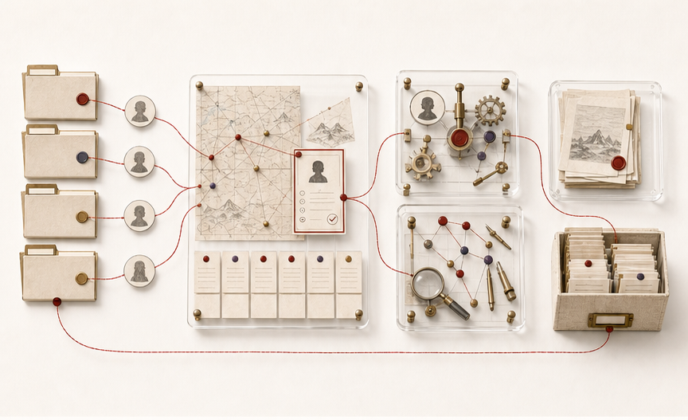
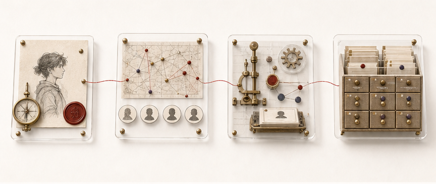
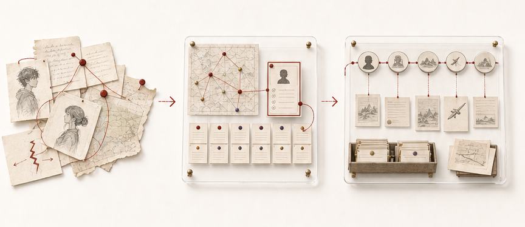

多项目尺度
持续比较项目组合，决定现在最值得推进的事情。
项目组合优先级依赖长期记忆
把多个 AI 项目组织成一支可以长期协作的团队。
OpenClaw 负责看全局、判断优先级和维护长期记忆；Codex 与专业 Agent 在边界清楚的任务内执行；验收后的状态、经验和知识再回到系统。
总控和执行不是同一件事。前者保持全局清醒，后者把一个明确任务真正完成。
持续比较项目组合，决定现在最值得推进的事情。
把被选中的事项变成边界明确、可以验收的任务。
先由人确定方向和授权，再由总控选择应该推进的项目；具体执行结束后，结果必须经过验收并回到长期系统。


目标、范围、优先级与最终授权
项目组合、依赖、风险与长期记忆
在明确任务内执行、检查并提供证据
接收可复用的来源、知识、方法与经验

每次继续之前，都能知道项目真正走到了哪里。
角色和项目事实被保留下来，不依赖一次对话记住全部。
验收后的方法、知识与资产进入下一轮复用。